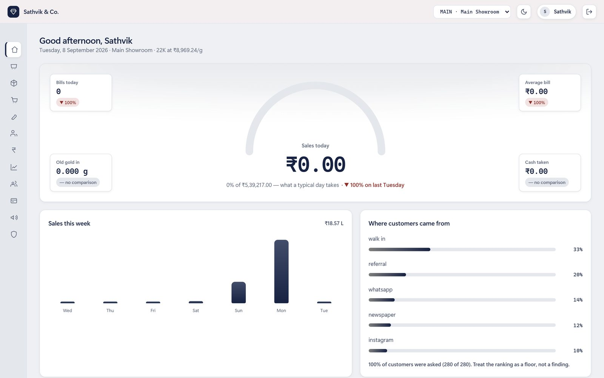
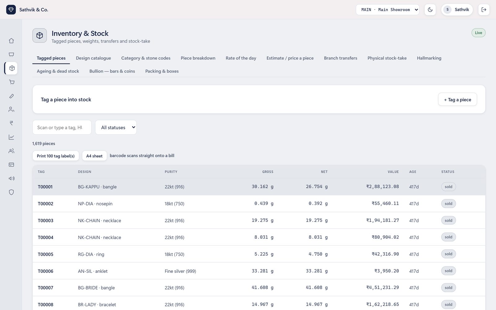
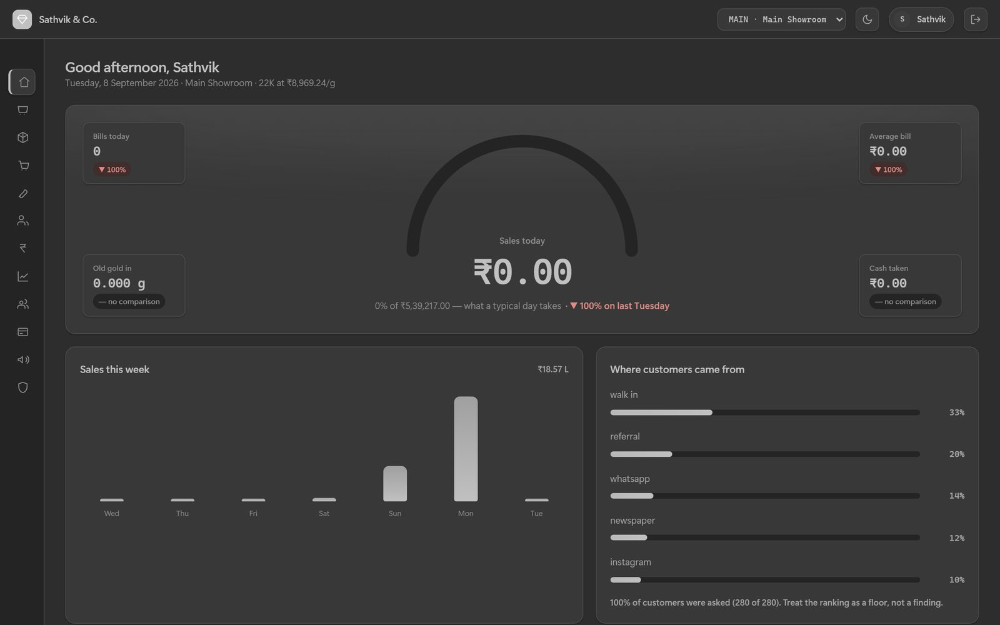

A jewellery business, end to end, on one computer
Billing, stock, the workshop, GST returns and double-entry books for a working jewellery shop — built as a desktop application that runs with the network cable out and costs nothing to operate. Eleven departments, 281 endpoints and 1,538 tests. No subscriptions, no server, no AI in the product.
Not a dashboard over someone else's system — it is the system. A piece is tagged when it arrives, priced from the rate fixed that morning, sold at the counter, posted to the books, and reported to the GST portal, without leaving the application.
Most of the engineering here is not features — it is making the shop's own rules impossible to violate, including by a future version of the software. Each of these is enforced in the service layer and covered by tests that fail if the rule is loosened.
Screens below run on a synthetic demo dataset — a generated year of trading, not the shop's real books. The interface is plain HTML, CSS and JavaScript with no framework and no build step, and every chart is drawn with CSS and inline SVG rather than a charting library, because the whole thing ships as one downloadable binary with no network.



| Decision | Why |
|---|---|
| Desktop app, not a service | A shop should not lose its billing system because a card expired or the internet is down during a wedding season. It installs under the user's own account, needs no administrator rights, and holds its data in one file that a backup can carry. |
| Money and weight as integers | Paise and milligrams in scaled integers through a SQLAlchemy type, with floats rejected at the boundary. Money that drifts by a paisa per bill is money that will not reconcile at year end. |
| SQLite, Postgres-compatible | One shop with one till is comfortably a SQLite workload — 60 bills a day for ten years is about 150k lines. The schema avoids Postgres-only types, so scaling up is a connection-string change and nothing else. |
| No LLM anywhere in the product | A bill has to be reproducible and explainable to a tax officer. Every figure comes from arithmetic that can be pointed at in the source. |
| Vanilla JS, no build step | No node_modules, no toolchain to drift between machines, and the shipped
JavaScript is the JavaScript that was written. |
| Barcodes written from scratch | Code 128 subset B is 144 lines, checksum included. A dependency for it would have been a dependency to keep current for the next decade. |
| Branches converge by file | Each branch keeps its own hash-chained run of events and they meet by exchanging a bundle. A bundle carries the shop's own key, so another business's file is refused rather than merged into the books. |
- It is not a product for sale. This was built for one specific shop, and the rules above are that shop's rules — the fixed making percentage, the refusal of credit, the owner-only accounts. Another jeweller would want several of them to be settings.
- The builds are unsigned. Windows SmartScreen and macOS Gatekeeper both warn on first run. Clearing that needs a paid certificate on each platform, which is a deliberate non-decision rather than an oversight.
- The screenshots are synthetic data. A generated year of trading is used for development and for these images. Real books are never published, and the source repository is private.
- Multi-branch is built but lightly exercised. The sync engine, its hash chain and the shop-key check are tested, but they have not yet run for a year across two real showrooms, which is the only test that finally counts.